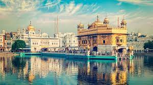

It is an arch-monument built in the early 20th century in the city of Mumbai, India.
It was erected to commemorate the landing in December 1911 at Wellington Pier, Mumbai of King-Emperor George V and Queen-Empress Mary,
the first British monarch to visit India. At the time of the royal visit, the gateway was not yet built,
and a cardboard structure greeted the monarch.
The foundation stone was laid in March 1913 for a monument built in the Indo-Saracenic style,
incorporating elements of 16th-century Gujarati architecture. The final design of the monument by architect George Wittet was sanctioned only in 1914,
and construction was completed in 1924. The structure is a triumphal arch made of basalt,
which is 26 metres (85 feet) high.It is an effort from the architect George Wittet.
Golconda Fort, also known as Golla konda (Telugu: "shepherds' hill"), is a fortified citadel built by the Kakatiyas and an early capital city of the Qutb Shahi dynasty (c. 1512–1687), located in Hyderabad, Telangana, India. Because of the vicinity of diamond mines, especially Kollur Mine, Golconda flourished as a trade centre of large diamonds, known as the Golconda Diamonds. The region has produced some of the world's most famous diamonds, including the colourless Koh-i-Noor (now owned by the United Kingdom), the blue Hope (United States), the pink Daria-i-Noor (Iran), the white Regent (France), the Dresden Green (Germany), and the colourless Orlov (Russia), Nizam and Jacob (India), as well as the now lost diamonds Florentine Yellow, Akbar Shah and Great Mogul.
The Golden Temple is spiritually the most significant shrine in Sikhism. It became a center of the Singh Sabha Movement between 1883 and 1920s, and the Punjabi Suba movement between 1947 and 1966. In the early 1980s, the Gurdwara became a center of conflict between the Indian government led by Indira Gandhi, some Radical Sikh groups, and a movement led by Jarnail Singh Bhindranwale. In 1984, Prime Minister Indira Gandhi sent in the Indian Army as part of Operation Blue Star, leading to deaths of over 1,000 soldiers and civilians, as well as causing much damage to the Gurdwara and the destruction of Akal Takht. The Gurdwara complex was rebuilt again after the 1984 damage